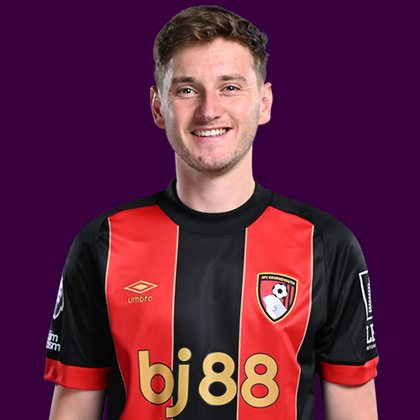

PITCHKEEP
Premier League · The Premier · Sleeper BPL
Player File · MID BOU · Premier #223

David Brooks
MID · Bournemouth · age 29 · £5.0m
2025/26 Premier League
| Year | Starts | Min | G | A | xG | xA | CS | GC | Bonus | YC | Sleeper | FPL |
|---|---|---|---|---|---|---|---|---|---|---|---|---|
| 2025/26 | 13 | 1188 | 1 | 3 | 5.81 | 3.4 | 5 | 20 | 4 | 7 | 44.6 | 59 |
FPL news
Doubtful — Unspecified injury - 75% chance of playing
Plus
- 44.6 Sleeper BPL 2025 points (Pitch #253).
- Corners order #4.
- Direct free-kick order #3.
- 1 goals on 5.81 xG — the shots were better than the box score.
- Consensus 153.5 vs Sleeper #253 — the industry still believes more than 2025/26 counted.
Minus
- Doubtful; Unspecified injury - 75% chance of playing.
- Board spread 42–253 (FPL xGI to Sleeper BPL 2025).
PitchKeep Take · The Premier
David Brooks is a midfielder for Bournemouth, age 29, £5.0m. The Premier ranks him 223rd overall by splitting Sleeper BPL 2025 (#253, 44.6 points) with the consensus of 6 other boards (153.5). The industry still has him 100 spots ahead of the 2025/26 Sleeper count. The Premier pays that reputation something, not everything. Brand does not outrun a down year, and a down year does not erase a player Bournemouth still builds around.
The 2025/26 Premier League line is 13 starts and 1188 minutes, 1 goals and 3 assists, 19 tackles and 19 CBI. Official FPL scored it at 59 points (1.9 per match) with 4 bonus. Sleeper's table turned the same counting stats into 44.6. Midfielders get 9 a goal, 6 an assist, and 1 a clean sheet, plus a full tackle/CBI stream. That is why a six who plays every week can outrank a ten-goal winger who sits.
Underlying: 5.81 xG, 3.4 xA, 9.21 xGI. He finished -4.8 above expected goals. Set pieces: corners order #4, direct free-kick order #3 for Bournemouth. Role at Bournemouth is the 2026/27 question sitting under the 2025/26 number. 13 starts is a starter. Anything under 25 starts is a rotation warning we already priced. Minutes are the skill that survives a finishing regression. The friendliest board is FPL xGI at 42; the coldest is Sleeper BPL 2025 at 253.
Market: £5.0m, 0.1% owned into the 2026/27 FPL start, 7 boards on the file. That ownership is a leftover. Either the public missed a real season or the public correctly decided the role is not repeatable. The Premier's rank is our vote. If we have him inside the first 80 and they have him at 0.4%, that is a Sleeper buy. FPL's own EP-next is 1.1. ICT 104.1.
Instruction: he is on the 400, which is already a statement, and he is not a star. Stash in Sleeper if the minutes are real. Do not let a Pitch screenshot make you start him over a Premier top-80. FPL flag: doubtful; Unspecified injury - 75% chance of playing. Nearby on The Premier: Omar Marmoush, Tanaka Ao, Nicolás Domínguez. Versus The Pitch (Sleeper-only #253), the hybrid moves him up to #223. That move is the third list doing its job.
He is 29, which on this desk is neither a dart nor a warning label. Prime-age midfielders get ranked on what they just did and whether Bournemouth still gives them the ball. 1188 minutes says yes. The 2026/27 FPL price (£5.0m) is the app's guess at whether that continues. The Premier is the blend of that guess and the box score.
How to use the file: The Pitch is the Sleeper-only 400 (he is #253 there). The Premier is the 50/50 with every other board we track. Attack, Midfield, Defence, and Keepers re-rank the same Sleeper table by position. BK Value on this page follows The Premier when you are on the hybrid calculator and The Pitch when you are on the Sleeper calculator. Same curve either way — 12,000 at 1.01. 7 yellows are a real Sleeper tax. Unranked sources are skipped, never treated as 999, which is why a player missing from Yahoo's XI is not secretly ranked 400th.
Sleeper vs FPL
Same 2025/26 line, two scoring tables
Board graph
Spread 42–253 · 7 sources
Tape · 2025/26 Premier League
David Brooks Disallowed GOAL, Bournemouth vs Newcastle 0-0 Highlights | Premier League 2025-2026
Every Board
Spread 42–253 · 7 sources
| Source | Rank |
|---|---|
| FPL xGI | 42 |
| FPL Form | 76 |
| FPL ICT Index | 121 |
| FPL 2025/26 Points | 221 |
| FPL Draft | 221 |
| FPL Price Board | 240 |
| Sleeper BPL 2025 | 253 |
On The Premier nearby — Omar Marmoush (#221) · Tanaka Ao (#222) · Nicolás Domínguez (#224) · Jacob Ramsey (#225)